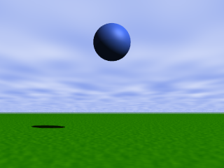
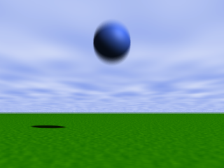
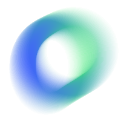
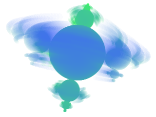

The Motion Blur option allows the generation of scenes with moving objects:
This menu command checks the syntax of the scene in the editor before showing the dialog box.
Motion blur is achieved rendering the same scene with slightly different clock values, and combining the resulting bitmaps. A trapezoidal filter is applied, in order to assign more importance to clock values near the middle of the interval.
|  |  |
Even if you have not used any range expression in your scene description, you still can generate interesting blur effects by activating both the camera rotation feature and the motion blur option:
The following image has been generated using eleven samples, camera rotation and a sampling width of 0.020 seconds:
Note that even a small width such as 0.020 seconds represents a rotation of 7º12'.
You can also combine extreme motion blur with the sonar mode to generate interesting visual effects:
|  |  |
Home | Animation support | Using XSight's Ray Editor | Editor Window | Rendering | Image Window | Animation Form | Noise Generator | Scene Wizard | Options Dialog